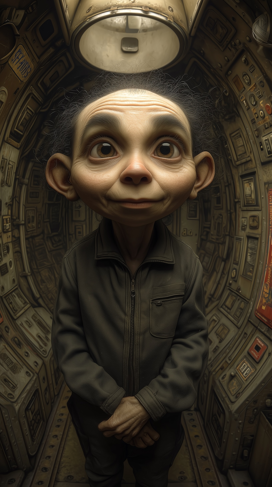

Pavan
Resistance Leader — Home

Pavan
Supporting Character (Book 5)
Biography
Pavan is one of the three leaders of the zero-gravity resistance aboard Home, distinguished by her analytical mind and careful tactical awareness. Born into the same weightless environment as her fellow leaders, she shares their distinctive physiology — the spindly limbs, narrow frame, and puffy features of someone whose body has never experienced gravity.
Where Andy leads through patient consensus-building, Pavan contributes strategic thinking and rigorous analysis. She was instrumental in planning Lucy's recruitment circuits, cross-referencing colonial data to identify optimal targets for the pamphlet drops and subsequent cell-building operations. Her scientific curiosity extends to everything she encounters, from the logistics of resistance operations to the technical capabilities of Aggie's systems.
Pavan's emotional restraint is a defining characteristic — she processes information before responding, weighs risks methodically, and rarely displays feelings openly. When she does, the impact is proportionally greater: her tears upon learning of Aggie's true nature, wiped away with a quick, almost angry gesture, speak to decades of suppressed hope finally finding validation.
Personality Traits
Appearances
- The Proliferation (Book 5) — Resistance leader who provides strategic direction for the network-building operations and serves as a tactical counterweight to Andy's broader leadership.
Key Relationships
Andy & Heinz
Fellow leaders whose complementary strengths create an effective triumvirate. Pavan's analytical rigour balances Andy's pragmatism and Heinz's engineering focus.
Lucy Reeves
Pavan's scepticism about Lucy's proposals is always constructive rather than obstructive — she asks the hard questions that make plans better.